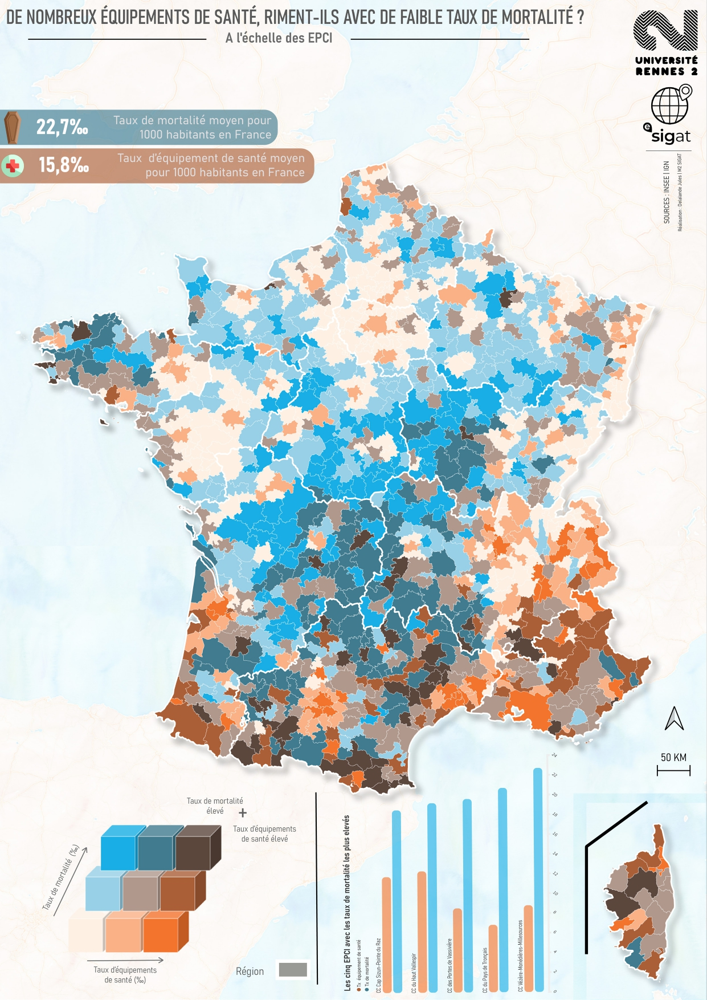
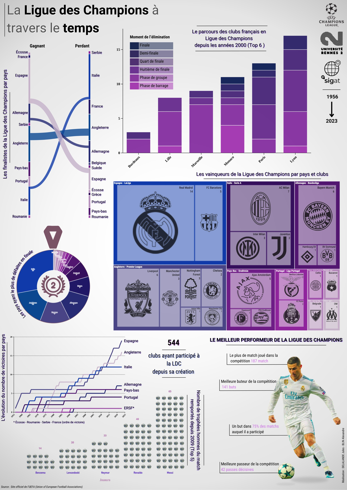
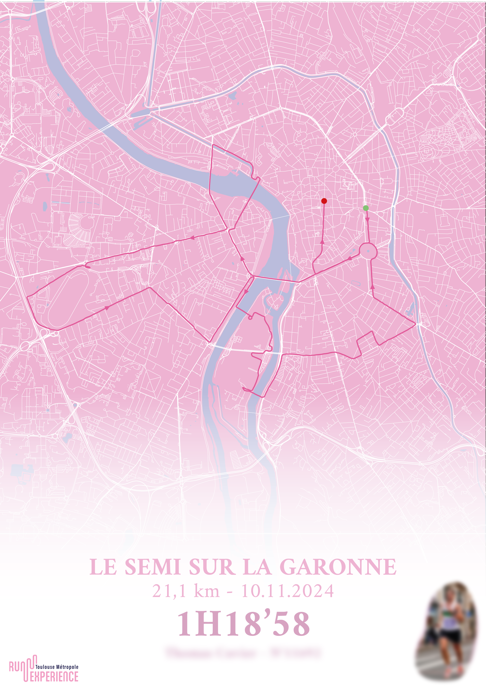

Biographie
Jeune diplômé d'un Master en Géomatique, parcours "Systèmes d'Information Géographique et Analyse des Territoires" (SIGAT) à l'université Rennes 2.
J'ai découvert ce domaine passionnant lors de ma dernière année de Licence en Géographie. Cette découverte m'a permis de comprendre comment gérer,
analyser et valoriser des données géographiques de manière efficace. Animé par une volonté constante de progresser, je continue à perfectionner mes compétences
en SIG (logiciel cartographique, langage de programmation, logiciel de création graphique ...) à travers une pratique régulière.
Portfolio





